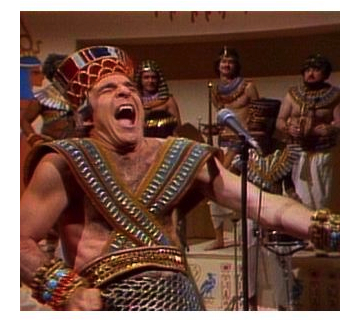

tut


tut is a very simple documentation tool for Scala that reads Markdown files and interprets Scala code in tut sheds, allowing you to write documentation that is typechecked and run as part of your build.
The current version is 0.6.2 for sbt 1.1 and Scala 2.10/11/12/13.
tut is a Typelevel project. This means we embrace pure, typeful, functional programming, and provide a safe and friendly environment for teaching, learning, and contributing as described in the Typelevel Code of Conduct.
Quick Start
1. Add the following to project/plugins.sbt:
addSbtPlugin("org.tpolecat" % "tut-plugin" % "0.6.2")
2. And add the following to build.sbt:
enablePlugins(TutPlugin)
3. Write a tutorial in src/main/tut/Foo.md:
Here is how you add numbers:
```tut
1 + 1
```
4. At the sbt> prompt type tut, then look at the output in target/<scala-version>/tut/Foo.md:
Here is how you add numbers:
```scala
scala> 1 + 1
res0: Int = 2
```